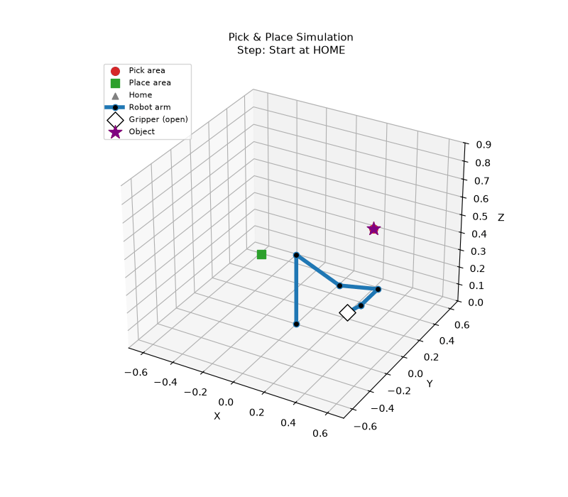
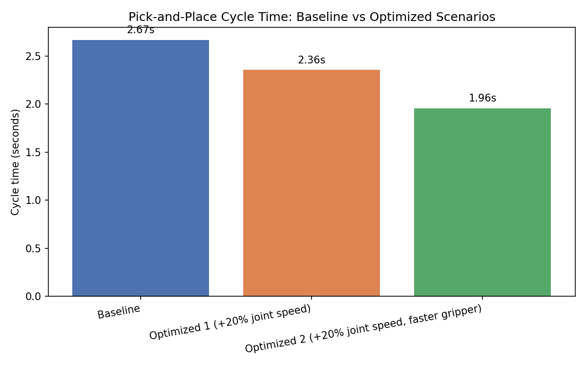

A DH-parameter forward-kinematics simulation of a pick-and-place cycle, used to test whether the same operation can run faster without unsafe motion.

Industrial robots repeat one motion thousands of times a day, so even small timing gains compound fast. The question here was narrow and testable: can this specific pick-and-place cycle be shortened by changing motion parameters and gripper timing — without moving the pick or place positions, and without unsafe joint speeds.
The simulation has no computer vision, no machine learning, and no inverse kinematics — every pose is a chosen set of joint angles, and the arm's position is computed forward from there.
All six joints move simultaneously during a real move — so each segment's time is set by whichever joint has the furthest angle to travel relative to its own speed limit. Two changes were tested against that model:
Speed limits raised 20% across all six joints, simulating faster servo tuning.
Gripper actuation cut from 4 s to 2 s, simulating a faster pneumatic valve.
| Scenario | Change | Cycle time | vs Baseline |
|---|---|---|---|
| Baseline | Conservative joint speeds, 0.4s gripper | 2.67 s | — |
| Optimized 1 | Joint speed +20% | 2.36 s | −11.7% |
| Optimized 2 | + faster 0.2s gripper | 1.96 s | −26.7% |

Forward kinematics, waypoint logic, GIF rendering, and the cycle-time model — all in four short Python files.